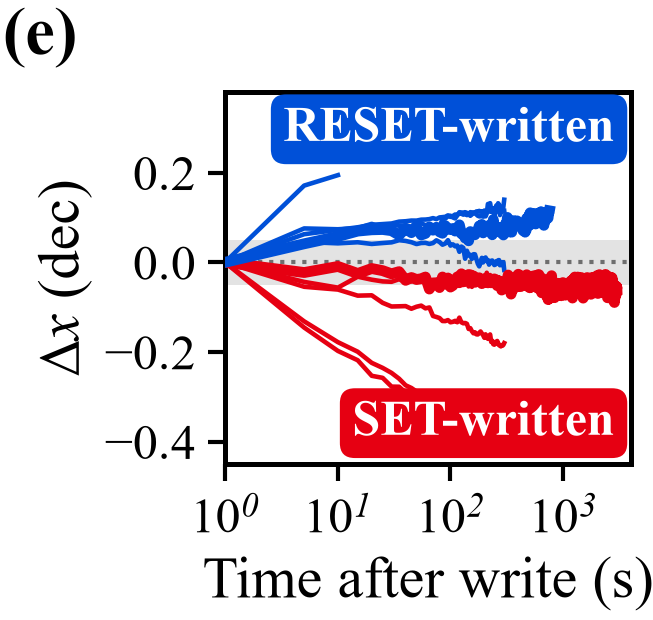
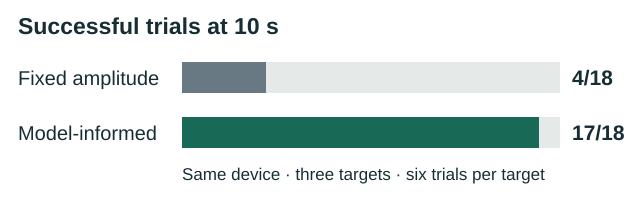

How long does a successful write last?
A multilevel memristor can reach a target conductance immediately after a write and drift out of range before the next operation. I saw this in our CeO₂:Au vertically aligned nanocomposite devices. With fixed-amplitude pulses, 15 of 18 first-round reads met the target tolerance at the 0.2-second check. Ten seconds later, only three of those trials remained inside it.

Designing for the delayed read
I led the experimental and modeling work on this project. I characterized the pulse response, built a behavioral compact model from measured data, implemented model-informed programming, and carried the measured programming errors into network simulations. The materials work was part of a collaboration in Wang’s Thin Film Group.
Gold-rich columns in the CeO₂ film
The cross section shows columns extending through the film. Energy-dispersive X-ray spectroscopy (EDS) adds the chemical detail: gold is concentrated in columns within the ceria matrix, with a weaker gold signal near the film surface.

Predicting conductance after a write
I fitted the compact model to the electrical pulse and hold measurements. A single relaxation response gave a 10-second prediction error of 0.218 decade on the programming device. Accounting for the dependence on written state reduced it to 0.042 decade. I then chose each programming pulse according to how close its predicted 10-second conductance would be to the target.
Testing the programming decision
I compared fixed-amplitude and model-informed writes on one device. Each policy had six attempts at each of three target conductances, with the same tolerance (±0.05 decade), readback time (10 s), and allowance for correction. After the full correction sequence, the fixed-amplitude policy reached the target in 4 of 18 trials. The model-informed policy succeeded in 17 of 18. Pulses per successful outcome fell from 14.8 to 2.9.

What the programming error costs in inference
I used the measured programming errors to simulate weights in two networks. Keeping the weight range and training conditions fixed allowed me to compare the two writing policies at the application level.
MNIST · Image classification
95.9%
Simulated MLP accuracy with model-informed programming, against a 96.2% software baseline and 4.4 percentage points above fixed-amplitude programming.
GPT-2 · Language modeling
12× lower perplexity
On WikiText-2, the simulated GPT-2 model reached approximately one-twelfth the perplexity obtained with fixed-amplitude programming.
Related manuscript
Henan Wang and Zhengliang Lin (co-first authors), et al., “Device–Algorithm Co-Design Enabling a CeO₂-based Vertically Aligned Nanocomposite Memristor for Neuromorphic Computing.” IEEE EDTM 2027, under review.